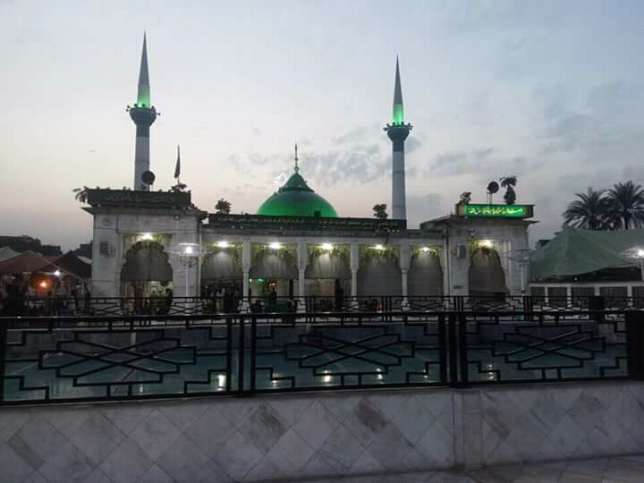

The Heart of Mystical Islam
Enter the realm of dervishes and devotional music, where centuries of mystical tradition pulse through shrine courtyards and qawwali melodies carry souls toward the divine.
Pakistan is one of the world's great Sufi heartlands. For over a millennium, Sufi saints—mystic poets, philosophers, and spiritual teachers—have shaped the religious and cultural landscape. Their shrines, from humble village tombs to vast complexes, remain living centers of devotion, music, and poetry. To visit Sufi Pakistan is not to tour museums but to step into a living tradition where devotional qawwali echoes every Thursday evening, where pilgrims travel hundreds of miles to seek blessings, and where the boundaries between Islam, poetry, music, and mystical experience dissolve into something transcendent.


Experience the hypnotic power of qawwali—devotional music that blends Persian, Arabic, Turkic, and Indian influences into something uniquely powerful. We arrange private listening sessions with master qawwals and visits to Thursday evening shrine mehfils (gatherings) where music becomes a path to the divine.
The urs (death anniversary) of major saints draws millions. These multi-day festivals blend religious devotion with music, poetry, handicrafts, and communal meals. We can time your journey to coincide with major urs celebrations—immersive cultural experiences unlike any other.
Meet with scholars and practitioners who can explain the deep philosophical currents of Sufism—from Ibn Arabi's concept of wahdat al-wujud (Unity of Being) to the local folk expressions of mystical love. Many shrines host study circles and discussions.
Witness langar (free communal meals), rose petal offerings, the tying of sacred threads, devotees circumambulating tombs, and the centuries-old rituals that continue unbroken. Respectful observers are welcome to participate or simply witness with reverence.
Sufism entered South Asia with early Muslim mystics and reached its golden age under the Mughals. Major Sufi orders—Chishtiyya, Suhrawardiyya, Qadiriyya, and Naqshbandiyya—established khanqahs (hospices) that became centers of spiritual teaching, poetry, music, and social service. Unlike the Islam of courts and conquest, Sufism emphasized love over law, experience over dogma, and welcomed all seekers regardless of caste, religion, or status.
The great Sufi poets—Rumi, Hafiz, Bulleh Shah, Shah Latif, Sachal Sarmast—wrote verses that are still sung in shrines and homes. Their message of divine love, human equality, and the futility of religious formalism resonates powerfully in modern Pakistan, where Sufi shrines serve as spaces of tolerance, inclusivity, and spiritual refuge.
Etiquette: Cover your head and shoulders, remove shoes before entering tomb areas, speak quietly, and ask permission before photographing people. Donations are voluntary but appreciated—much of shrine upkeep and langar comes from visitor contributions.
Best Times: Thursday evenings and Friday mornings are most active. Urs festivals are spectacular but crowded—we provide logistics support and cultural guides. Avoid Ramadan if you want to experience full qawwali and festival atmospheres, though the spiritual intensity during Ramadan has its own appeal.
What to Bring: Rose petals or incense as offerings (we can help arrange), modest clothing, and an open heart. Shrines are social spaces—families picnicking, children playing, pilgrims sleeping in courtyards. The sacred and everyday intertwine.
A Sufi journey through Pakistan also means exploring the regions' crafts (Multani blue pottery, Sindhi ajrak textiles, hand-painted truck art), tasting regional cuisines (Sindhi biryani, Multani sohan halwa, Lahori street food), and understanding the syncretic culture where Hindu, Sikh, and Islamic traditions have blended. Many Sufi saints' shrines are visited by people of all faiths—testimony to their universal message of love.
Sufi heritage tourism requires cultural sensitivity, contextual knowledge, and connections with shrine custodians and qawwali performers. We've spent years building relationships with khadims (shrine caretakers), musicians, and scholars who can offer deeper access and understanding. Our guides explain the symbolism, translate the poetry being sung, and help you navigate shrine etiquette respectfully. This is not voyeuristic tourism but a genuine invitation to witness and, if you wish, participate in living traditions.